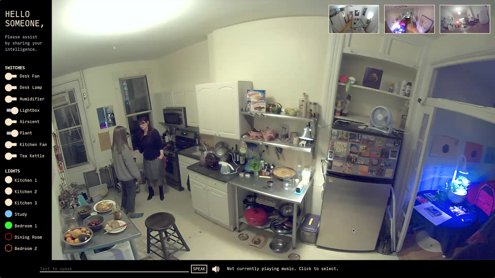

How to Make Mechanisms of Control
The Networked Object
17th June 2026
Part 1: The Invisible Thread
Telepresence in Art

Ken Goldberg - The Telegarden (1995-2004):
A foundational piece of internet art where remote users over the web could collaboratively control a physical robotic arm to water and tend a living garden.
It introduced the concept of shared physical agency over a network.

SOMEONE by Lauren McCarthy
Lauren Lee McCarthy - SOMEONE (2019)
A performance/installation exploring human smart-home automation.
Remote workers monitor and control the physical environment of a participant's home, raising questions about intimacy, surveillance, and control.

Linked Stick - Ken Nakagaki, Chikara Inamura (2015)
Linked Stick explores how shape-changing mirrored interfaces can be used to experience and learn from physical examples.
It attempts to expand the ways in which humans interact with and learn to use tools.
Telepresence impacts
- Agency over vast distances
- Community building with and without physical presence
- Control over physical and virtual spaces
- Privacy, power and agency
2. Network Anatomy & Protocols
The Post Office Analogy:
IP Address: The street address of the house (e.g., 192.168.1.105).
Port: The specific door or mailbox at that house (e.g., 8000 or 9000).
Protocols
UDP vs. TCP: We use UDP (User Datagram Protocol).
- Fast & lightweight, and doesn't wait for a handshake.
- If a packet is lost, it doesn't care; it just sends the next one. Perfect for real-time art, terrible for sending banking details.
Protocols
OSC (Open Sound Control): A format for naming data. It structures data like a website URL path:
BTW: OSC was designed to replace MIDI, hence the "Sound Control" - evolved into a standard for interactive media/ambient/light 412or/servo/target 180.
Part 2: Establishing Contact
Local Networks for your installation
CRITICAL SETUP: Do not use the university/campus WiFi.
Enterprise networks block device-to-device communication (Client Isolation).
If possible, bring your own cheap router
4. The Ping & The Echo
Finding the Laptop IP: Find your own laptop's IP address
via Terminal ifconfig on Mac or ipconfig on Windows Command Line.
Part 3: The Protocol Bridge
Coding the Transmitter - "The Mouth"
Coding the Receiver - "The Ear"
The Weekly Challenge - Tele-Kinetic Pairs
The Twist: You are not allowed to shout across the table. All testing must be done via the network :)
- The Setup: Group A (Input Node) & Group B (Output Node) sit on opposite sides of the table and exchange IP addresses.
- The Task: Group A uses their distance or another sensor to send an OSC message. Group B must catch that specific message and use it to drive a physical servo or stepper motor setup.